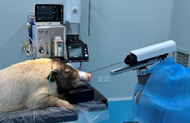
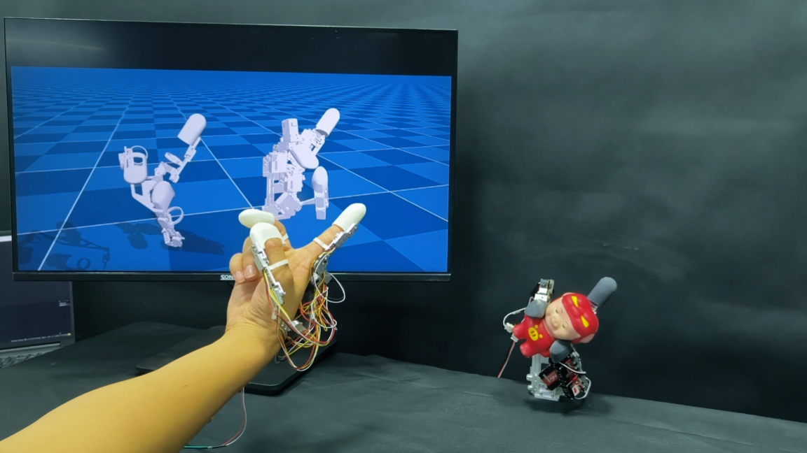
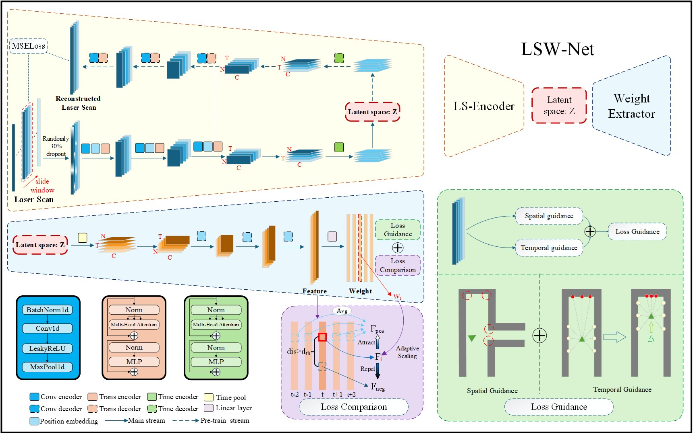
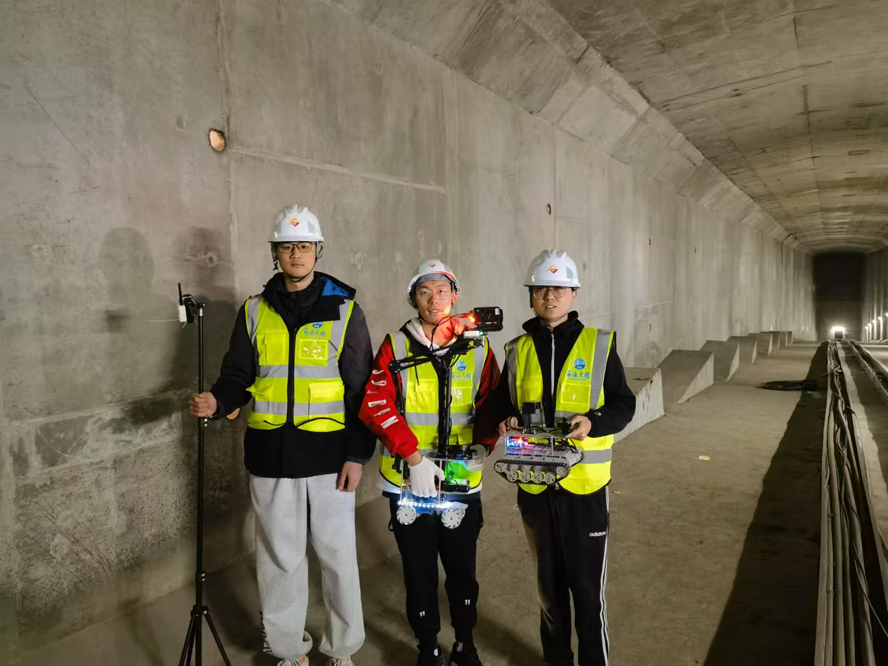
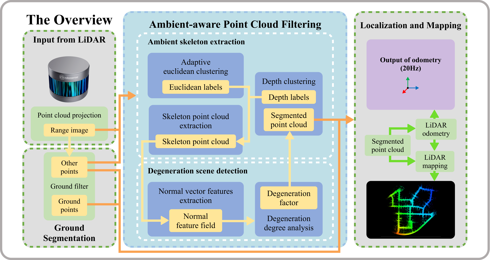
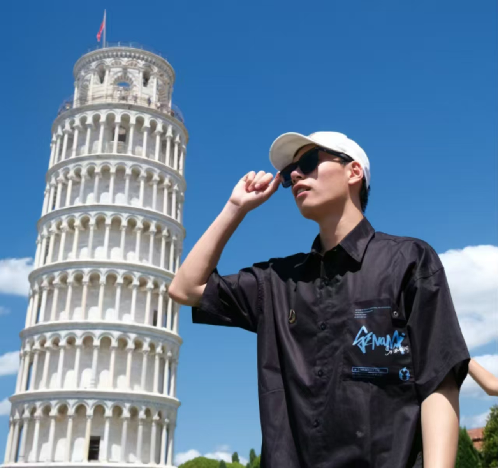
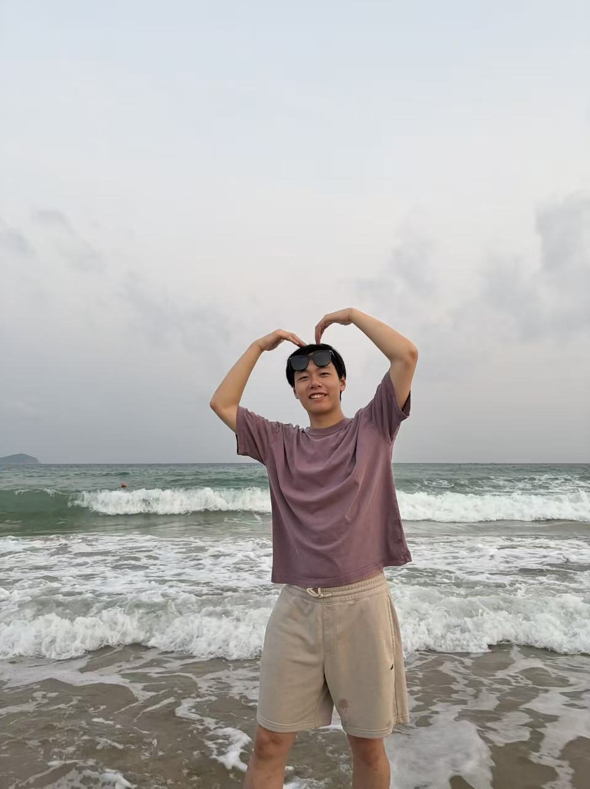
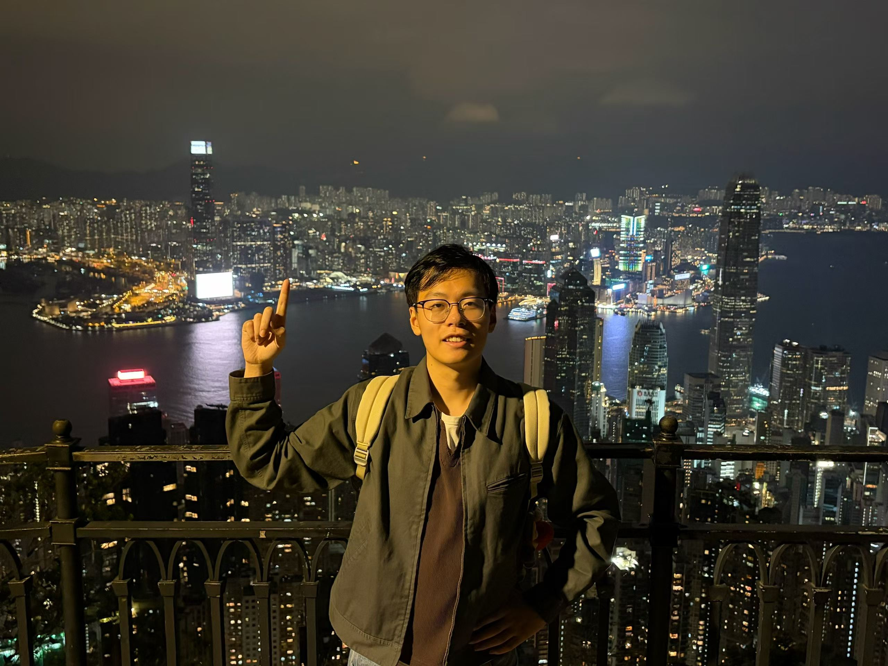
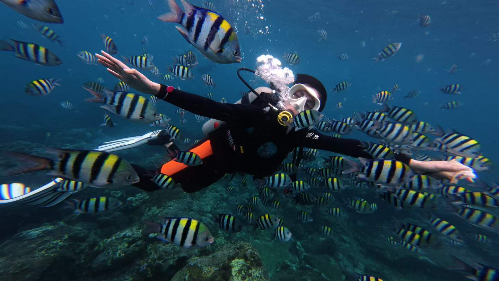
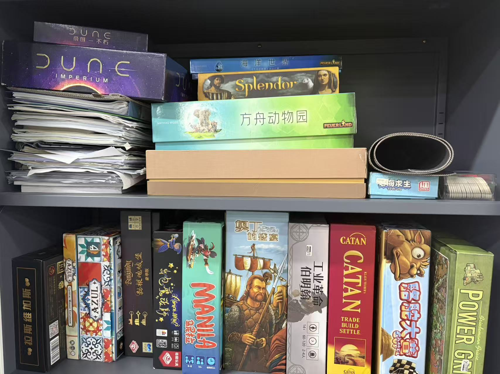

|
Yujie Cui [崔屿杰] Hi! I'm Yujie Cui, currently pursuing a Ph.D. degree in Medical Robotics at Zhejiang University. I am advised by Prof. Yue Wang, with co-supervision from Prof. Haojian Lu and Prof. Rong Xiong. I received my undergraduate training in Automation from Tongji University, where I worked in the RAIL Lab under the supervision of Prof. Qijun Chen and Prof. Chengju Liu. |
{kind=link}
ResearchI'm interested in robotics, machine learning, generate AI and computer vision. The following research experiences are listed in chronological order. Some projects are highlighted. |
|
 |
Research on Bronchoscopic Robots
Manuscript under review |
|
 |
Three-Fingered Dexterous Hand Universal Manipulation Interface |
|
 |
LSW-Net: A Spatio-temporal Self-Supervised Framework for 2D LiDAR-Based Environment Perception
Haojie Dai*, Yujie Cui*, Bowen Shi, Mazeyu Ji, Chengju Liu, Qijun Chen * Co-first author code 2025 IEEE/RSJ International Conference on Intelligent Robots and Systems (IROS 2025) |

|
STM32H7 based Aphasia Helper
An STM32H7-based assistive device for aphasia patients. Core Technology: Human-computer interaction and Edge AI. Award: Second Prize in National College Student Embedded System Design Competition code / project report |
|
 |
A smart robotic system for autonomous inspection of large-scale concrete girder
Yujie Cui, Yue Pan, Dalei Wang, Mazeyu Ji, Sugong Cao Bridge Maintenance, Safety, Management, Digitalization and Sustainability (IABMAS), 2024 Award: Three National Innovation and Entrepreneurship Competition Awards.(CV for details) project website / paper |
|
 |
Adaptive Denoising-Enhanced LiDAR Odometry for Degeneration Resilience in Diverse Terrains
Mazeyu Ji, Wenbo Shi, Yujie Cui, Chengju Liu, Qijun Chen IEEE Transactions on Instrumentation and Measurement, 2024 paper / IEEE / code |
MiscI'm interested in swimming, playing board games and traveling. Travel     Board Games  |
|
Designed and sourced code based on Jon Barron's website. |